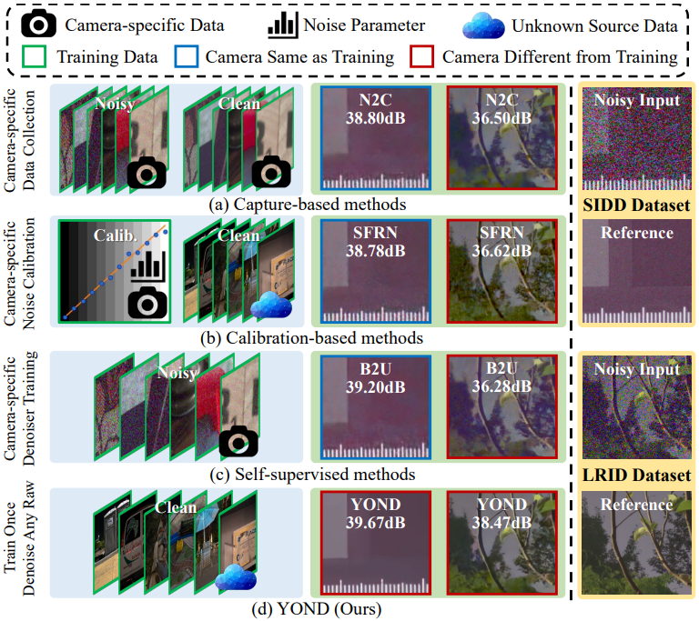
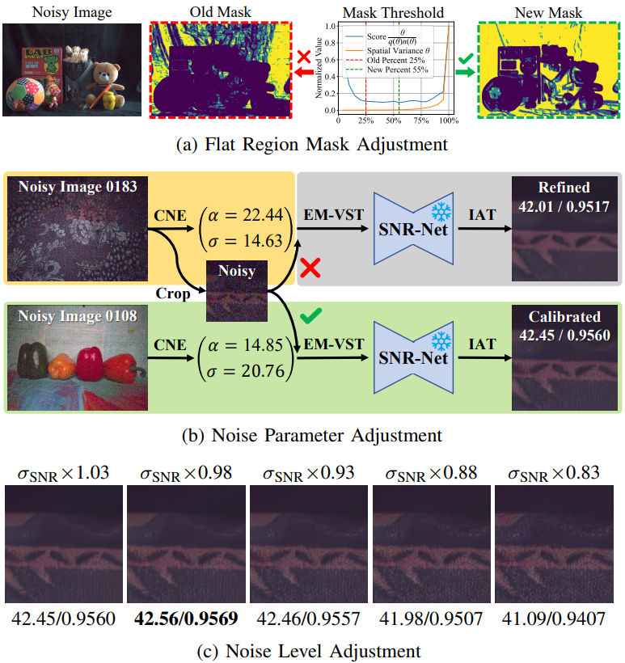
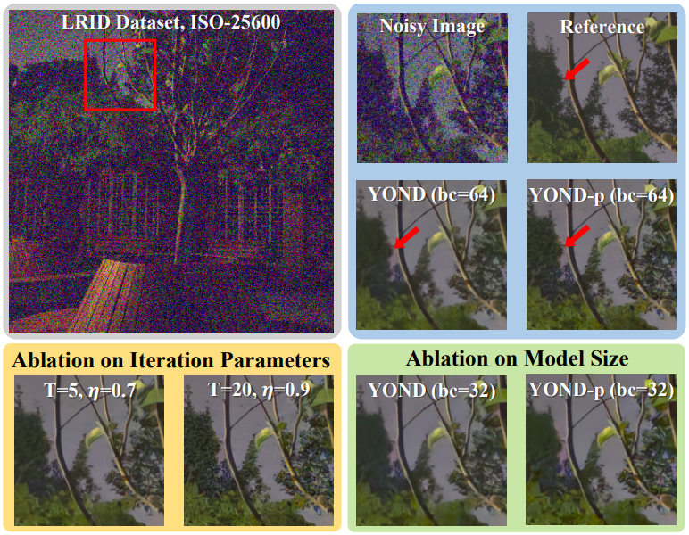

The rapid advancement of photography has created a growing demand for a practical blind raw image denoising method. Recently, learning-based methods have become mainstream due to their excellent performance. However, most existing learning-based methods suffer from camera-specific data dependency, resulting in performance drops when applied to data from unknown cameras. To address this challenge, we introduce a novel blind raw image denoising method named YOND, which represents You Only Need a Denoiser. Trained solely on synthetic data, YOND can generalize robustly to noisy raw images captured by diverse unknown cameras. Specifically, we propose three key modules to guarantee the practicality of YOND: coarse-to-fine noise estimation (CNE), expectation-matched variance-stabilizing transform (EM-VST), and SNR-guided denoiser (SNR-Net). Firstly, we propose CNE to identify the camera noise characteristic, refining the estimated noise parameters based on the coarse denoised image. Secondly, we propose EM-VST to eliminate camera-specific data dependency, correcting the bias expectation of VST according to the noisy image. Finally, we propose SNR-Net to offer controllable raw image denoising, supporting adaptive adjustments and manual fine-tuning. Extensive experiments on unknown cameras, along with flexible solutions for challenging cases, demonstrate the superior practicality of our method.
Comparison
The comparison of different self-supervised methods on SIDD dataset and DND dataset.
Blind raw image denoising results on images from the DND dataset.
The default settings enable YOND to outperform existing methods in most cases, while handling challenging cases is particularly essential in practice. A denoising method should be controllable to fulfill the slogan of ``You Only Need a Denoiser". Breaking data dependency has unlocked the powerful interactivity of YOND, allowing manual adjustments of various parameters to handle challenging cases. Next, we will we introduce two solutions to expand the applicability of YOND beyond its default settings.
Solutions Based on Fine-tuning
Solutions Based on YOND-p
